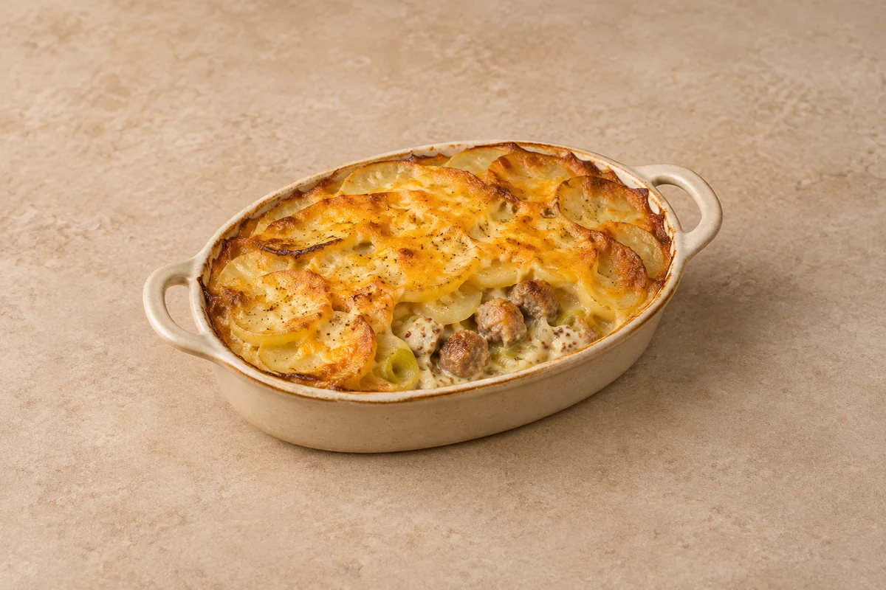

Bakes
Sausage, Leek & Mustard Gratin
Sausages and tender leeks in a mustard cream sauce beneath golden sliced potatoes. Serves 2.
Time to allow: 1 hr 15 min total
Ingredient quantities update automatically

Ingredients
Ingredients
Method
Prepare the potatoes
Heat the oven to 200°C / 180°C fan / gas 6. Simmer the potato slices in water for 7–8 minutes until starting to soften but still holding their shape. Drain carefully.Brown the sausages
Heat the oil in a deep frying pan over a medium heat. Brown the sausages for 6–8 minutes, turning regularly. Transfer to a board and cut into chunky pieces; they will finish cooking in the oven.Soften the leek
Add the leek to the pan and cook for 7–8 minutes until softened. Add the garlic and thyme and cook for 1 minute. Stir in the flour.Make the mustard sauce
Gradually stir in the stock, then add the cream and mustard. Simmer for 2–3 minutes until slightly thickened. Return the sausage pieces and any juices, stir well and season to taste.Assemble the gratin
Transfer to an approximately 20cm baking dish for 2 servings. Layer the potatoes over the top and scatter with the cheddar. Use a larger dish or several dishes when increasing servings.Bake
Bake for 30–35 minutes until the potatoes are tender, the top is golden and the sausages are cooked through with the filling piping hot. Rest for 5 minutes before serving.
Tips & leftovers
Storage & leftovers
Cool in shallow portions and refrigerate covered within 2 hours. Eat within 48 hours. Label the container with the recipe name and the date and time it was made; follow any shorter ingredient use-by or opened-pack instructions.
Freezing
Freezing not recommended for this finished cream gratin. Make fresh for the best sauce and potato texture.
Reheating
Reheat once in an oven at 180°C / 160°C fan until steaming hot in the centre. Cover if the top browns before the middle is hot; portion size affects the time. Check a sausage piece and the sauce beneath the potatoes are steaming hot.
Substitutions
Use your preferred pork sausages, checking their cooking instructions. Mature cheddar can replace other hard cheese. Dijon gives a smoother sauce than wholegrain mustard.
Keeping leftovers safe
Keep chilled food at 0–5°C and follow the shortest ingredient use-by or opened-pack instruction. Cool cooked leftovers in small portions and refrigerate within 2 hours. Reheat suitable cooked leftovers only once, until steaming hot throughout; ingredients already reheated in this recipe must not be reheated again. Serve chilled desserts cold. Freezing recommendations and any exceptions for a base prepared without cream or prawns are explained in this recipe’s Freezing note.
Food-safety guidance: Food Standards Agency: chilling and freezing · reheating leftovers.